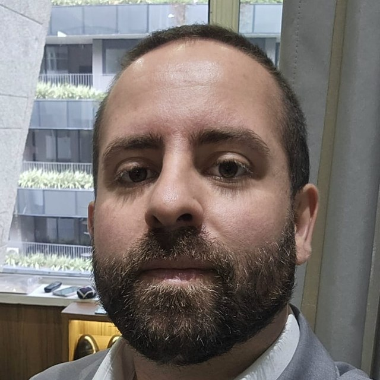

Especialista em FICO Blaze Advisor e DMPS, com vivência em Decision Modeler, RMA e AFM. Desenho, integro e sustento motores de decisão de crédito, cadastro e cobrança — com rastreabilidade e governança de ponta a ponta.

Sou especialista em motores de decisão com mais de 14 anos em tecnologia, 8 deles dedicados a plataformas de decisão e regras de negócio no setor financeiro. Atuo no ciclo completo de uma solução decisória: do levantamento com negócio e risco ao desenho da estratégia, regras e ruleflows, integração, homologação e sustentação em produção.
No Santander, desenhei e evoluí o motor de decisão em FICO Blaze Advisor para crédito, cadastro, cobrança e elegibilidade de produtos, integrado a APIs e microsserviços de alto volume. No Itaú Unibanco, coordenei projetos de automação de processos e decisão com governança de requisitos e homologação.
Sou formado em Sistemas de Informação pela EACH-USP, com formação em inglês em Toronto. Meu foco agora é arquitetura de decisões em larga escala — explicáveis, auditáveis e prontas para a FICO Platform.
A mesma espinha dorsal em cada motor: dado de entrada validado, política traduzida em regras, estratégia testada, execução em tempo real e cada decisão rastreável.
Cadastro, crédito, cobrança e core bancário chegando por APIs e mensageria.
Business rules, decision tables e trees mantidas com o negócio.
Ruleflows, scorecards e champion/challenger antes de ir para produção.
Orquestração de decisões e ofertas em alto volume, batch e streaming.
Versionamento, rastreabilidade, análise de impacto e explicabilidade.
Toque em cada empresa para ver os detalhes.
Blaze Advisor (SRL, RMA, rule templates), FICO DMPS, Decision Modeler, AFM e Decision Service Robot.
Decision tables e trees, ruleflows, scorecards, champion/challenger, loanflows e simulação de cenários.
Orquestração de decisões e ofertas, serviços de decisão de alto volume, streaming e mensageria.
Versionamento, rastreabilidade, auditoria, análise de impacto e explicabilidade das decisões.
REST, microsserviços, JSON e XML, filas e tópicos (Service Bus) e integração com core bancário.
SQL avançado (SQL Server, Oracle, DB2), ETL, gestão de projetos e squads, CI/CD com Git e GitLab.
Treinamento oficial FICO Systems (2019), base da atuação em Blaze Advisor, DMPS, Decision Modeler, RMA e AFM — alinhada à evolução do mercado para a FICO Platform.
Aberto a conversas sobre FICO Blaze Advisor, DMPS, Decision Modeler e arquitetura de decisões em larga escala.